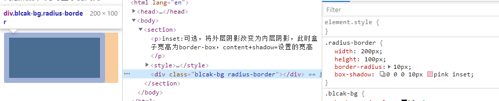

2.边框内圆角的实现
知识点：box-shadow: h-shadow v-shadow blur spread color inset;
spread:阴影的大小，正值
inset:可选，将外层阴影改变为内层阴影，此时盒子宽高为border-box，content+shadow=设置的宽高


知识点：outline,outline可以为负值
CSS并不简单--走进border、box-shadow和outline
.dash-border {
width: 200px;
height: 100px;
line-height: 100px;
outline: 1px dashed #fff;
outline-offset: -10px;
}
知识点：box-shadow: h-shadow v-shadow blur spread color inset;
spread:阴影的大小，正值
inset:可选，将外层阴影改变为内层阴影，此时盒子宽高为border-box，content+shadow=设置的宽高
知识点：linear-gradient,repeating-linear-gradient
background-image: linear-gradient(direction, color-stop1, color-stop2, ...);
background: repeating-linear-gradient(angle | to side-or-corner, color-stop1, color-stop2, ...);
知识点：linear-gradient,repeating-linear-gradient,radial-gradient